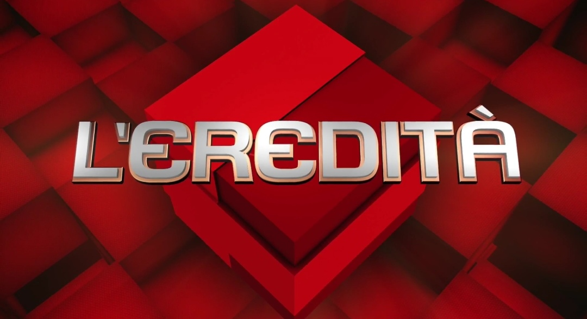

l'eredità
"L'eredità" è un quiz televisivo a premi che va in onda su Rai 1 in fascia preserale. Nel programma si sfidano sette concorrenti in diverse prove, e solo uno potrà partecipare all'ultimo gioco, ovvero la "Ghigliottina". Il programma, che riprende un gioco a premi argentino, è il più longevo della storia della TV italiana.
Amadeus condusse il programma TV dal 29 luglio 2002 al 10 giugno 2006, mentre Dal 4 settembre 2006 al 26 settembre 2015 il programma venne condotto da Carlo Conti, che passò il testimone della conduzione a Fabrizio Frizzi fino al 25 marzo 2018. A causa di problemi di salute, Carlo Conti venne richiamato a condurre il programma dal 30 ottobre al 15 dicembre 2017. Il programma venne sospeso per una settimana a causa della morte di Frizzi, e venne poi condotto una terza volta da Conti, fino a fine stagione.
Da settembre 2018 il nuovo conduttore è Flavio Insinna, ex conduttore di "Affari Tuoi".
